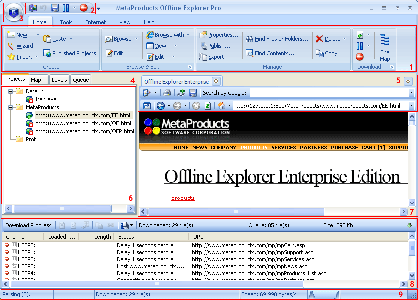

В главном окне Offline Explorer Pro девять основных разделов:
Панель быстрого доступа - содержит наиболее часто используемые кнопки. Вы можете добавлять/удалять кнопки используя настраиваемое меню справа от этой панели.
Кнопка приложения - щёлкните для показа меню с Печать/Настройки/Выход и другими элементами.

Использовать Offline Explorer Pro очень просто. Есть список Проектов, каждый из которых описывается задачей загрузки: какой web-сайт загружать, когда его загружать, сколько файлов, какие файлы, и так далее. Проекты могут быть классифицированы группировкой их по папкам.
Три основных шага в работе с Offline Explorer Pro:
Загрузите Проект.
Посмотрите результаты по окончании загрузки.
Offline Explorer Pro позволяет Вам выполнять пост-обработку загруженных web-сайтов. Дополнительную информацию об извлечении данных читайте здесь.